내용 조사·이야기 구성
정책과 생활정보를 조사하고 대본·콘티로 정리했습니다. 지원 대상·이용 방법처럼 필요한 정보를 캐릭터의 대화와 장면으로 구성했습니다.
주민에게 필요한 정보를 만화와 그림으로 전했습니다.
광진구청의 정책과 생활정보를 인스타툰·만화·일러스트로 제작했습니다. 주민이 알아야 할 정보를 캐릭터의 대화와 장면으로 구성했습니다.
담당한 만화는 내용 조사부터 대본·콘티, 선화·채색, 문구 편집과 수정 대응까지 전 과정을 직접 맡았습니다.
정책과 생활정보를 조사하고 대본·콘티로 정리했습니다. 지원 대상·이용 방법처럼 필요한 정보를 캐릭터의 대화와 장면으로 구성했습니다.
콘티를 바탕으로 선화·채색을 진행하고, 그림과 함께 읽을 문구를 편집해 완성했습니다.
연도별 안내 내용과 캐릭터 변경 요청에 맞춰 문구와 작화를 수정했습니다.
작품을 선택하면 웹툰 원고와 일러스트, 목업·실제 적용 사례를 볼 수 있습니다. 목록은 제작 연도 기준이며, 공식 게시물과 행사 사진은 작품별 링크로 연결했습니다.
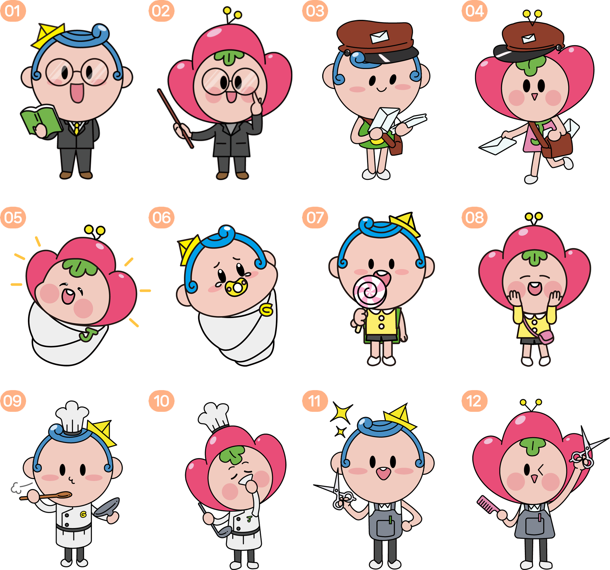
기존 공식 캐릭터인 광이·진이를 여러 상황과 직업에 맞는 동작으로 확장했습니다.
독서·우편·요리·미용 등 활용 상황에 맞춰 의상·소품·표정을 바꾸고, 기존 캐릭터의 응용동작 40종을 제작했습니다.
추석을 주제로 보름달을 바라보는 광이·진이 일러스트를 제작했습니다.
기존 캐릭터에 한복과 명절 소품을 적용하고 달빛을 중심으로 장면을 구성했습니다.
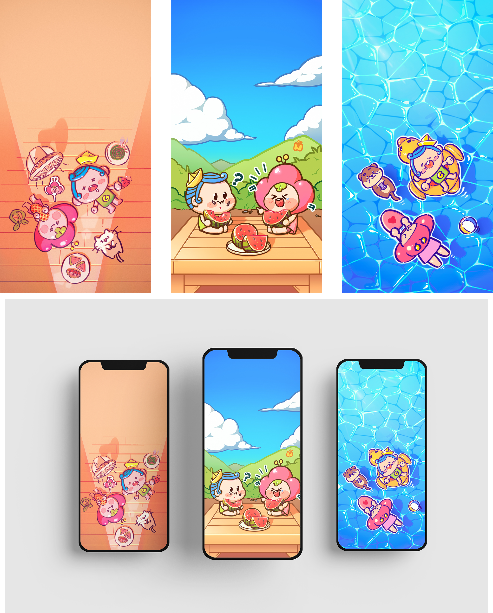
주민 배포를 위한 여름 테마의 광이·진이 휴대폰 배경화면을 제작했습니다.
간식·수박·물놀이를 주제로 세로형 화면을 구성하고, 휴대폰에 적용한 모습을 목업으로 정리했습니다.
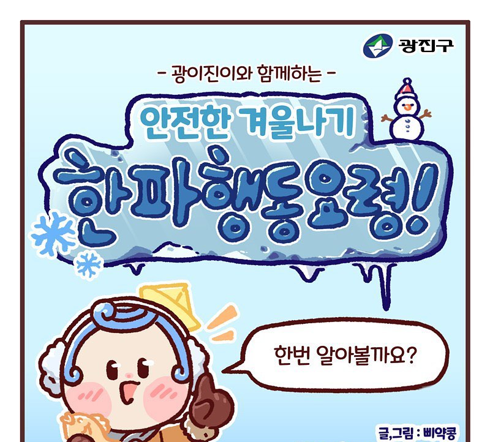
한파에 대비해 알아야 할 행동요령과 생활 속 주의사항을 안내했습니다.
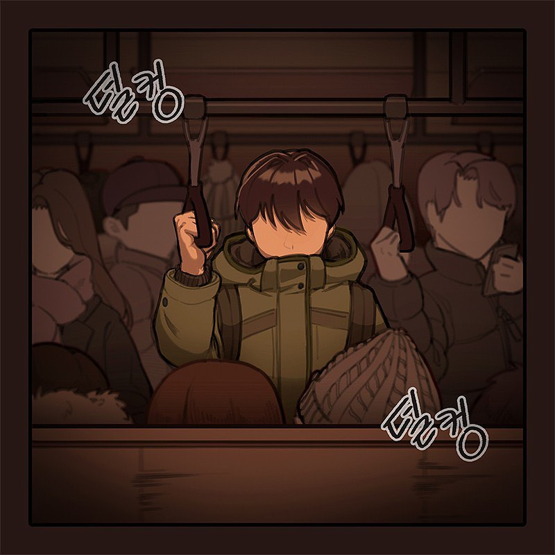
1인가구 지원센터에서 이용할 수 있는 지원 내용을 이야기로 소개했습니다.
2022년 제작 기록 · 공식 게시일 2023.01.27.
빈칸퀴즈의 문제 화면과 참여 안내를 구성한 홍보 콘텐츠입니다.
퀴즈 본문과 정답 발표를 함께 볼 수 있습니다.
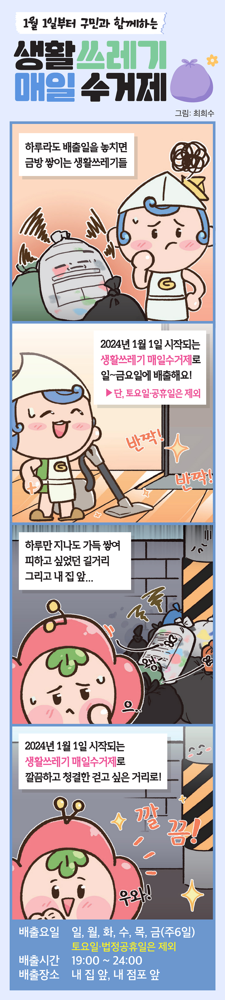
생활쓰레기 매일 수거제를 소개한 4컷 만화입니다.
2023년 12월 제작·SNS 게시 · 아차산메아리 2024년 1월호 게재.
반려동물 등록의 필요성과 등록 안내를 이야기로 구성했습니다.
공동육아나눔터의 이용과 돌봄 정보를 만화로 소개했습니다.
정기분 재산세 납부 정보를 세로형 만화로 안내했습니다.
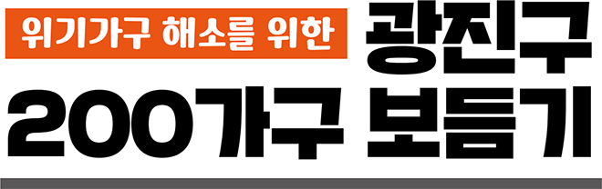
200가구 보듬기 사업의 대상과 지원 내용을 인터뷰 형식으로 소개했습니다.
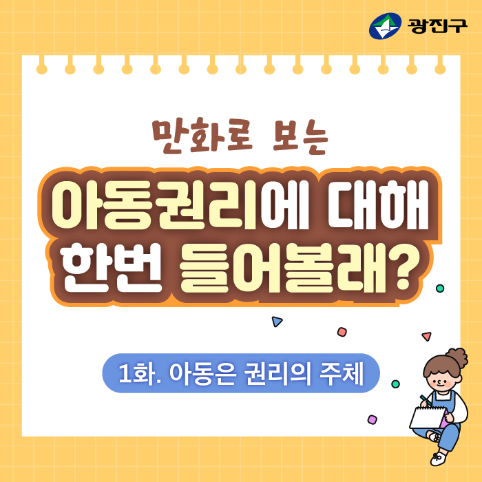
아동권리를 세 편의 이야기로 나누어 설명했습니다.
아동권리 1~3화 · 회차별 공식 게시 링크를 연결했습니다.
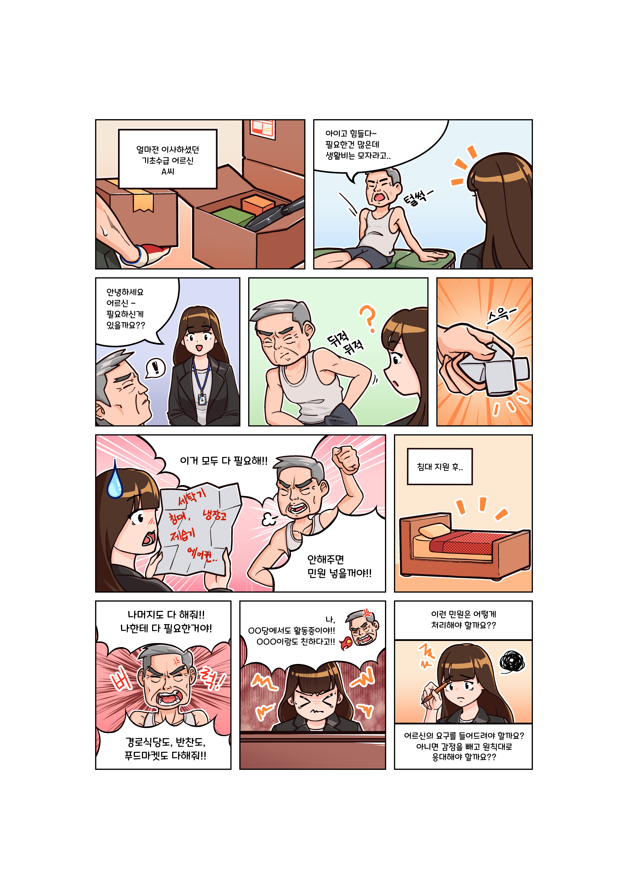
민관협력 사례공유회 결과보고집 서책에 삽입한 컷만화입니다.
서책에 삽입한 완성 원고 3쪽을 소개합니다.
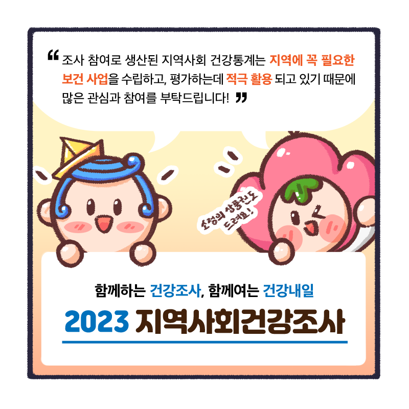
2023년 지역사회건강조사를 안내하는 만화입니다.
청소년 지원센터 작품의 캐릭터를 교체하기 위해 제작한 수정안 기록입니다.
마지막 컷의 캐릭터 교체 수정안 2종입니다.
유기동물 입양비 지원사업을 소개한 만화입니다.
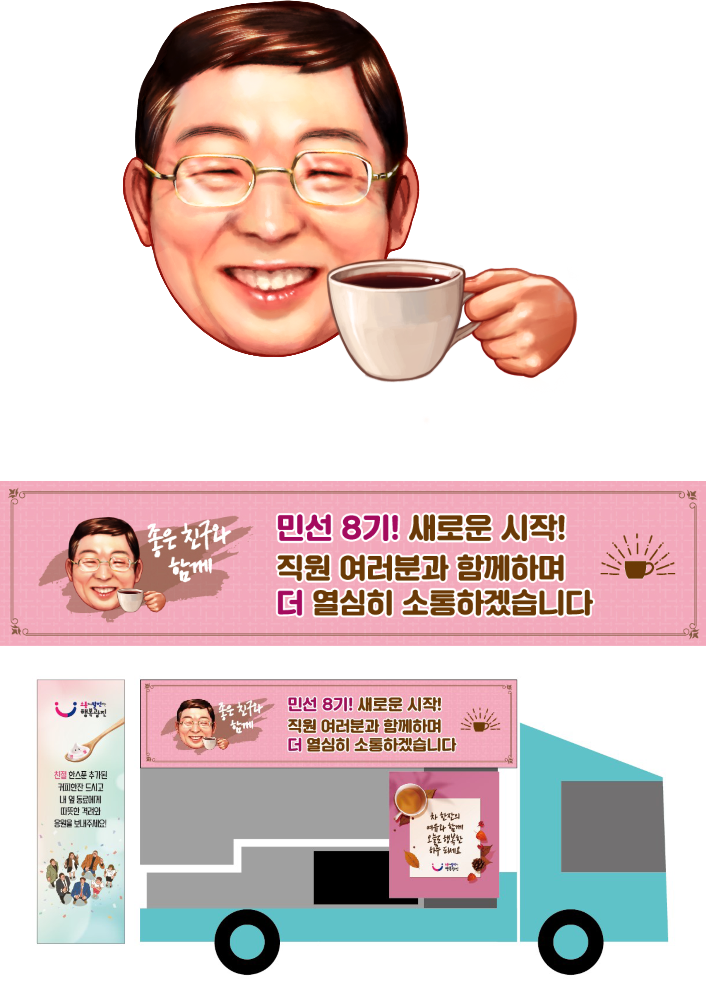
구청 직원 대상 커피트럭 행사에 사용할 캐리커처를 그렸습니다.
커피를 든 캐리커처와 현수막 적용안을 제작했습니다. 그림이 실제 행사 현수막에 사용된 모습도 함께 소개합니다.
주민과 구청 직원에게 친근하게 다가갈 수 있도록 구청장의 SD 캐리커처를 제작했습니다.
인물의 얼굴 특징을 살리면서 작은 몸과 주먹을 쥔 동작으로 응원하는 모습을 표현했습니다.
건강검진 결과와 대사증후군 관리 제도를 주인공의 일상과 연결했습니다.
음식물쓰레기 종량기와 음쓰제로 사업을 알리는 만화입니다.
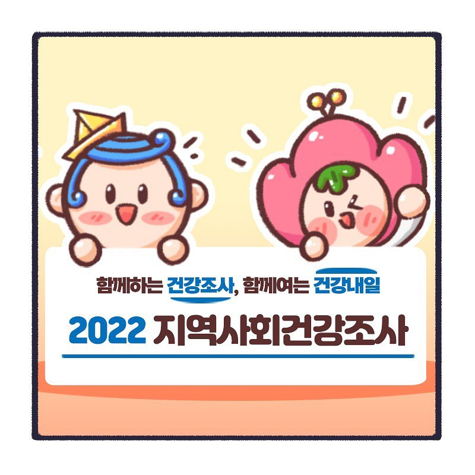
지역사회건강조사의 참여와 진행 정보를 안내한 만화입니다.
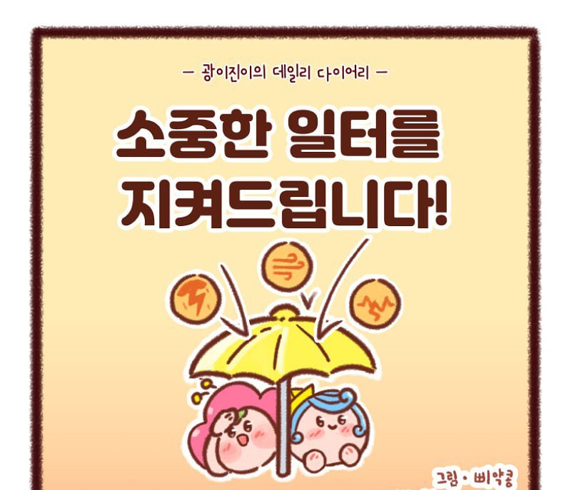
풍수해보험의 필요성과 지원 내용을 이야기로 안내했습니다.
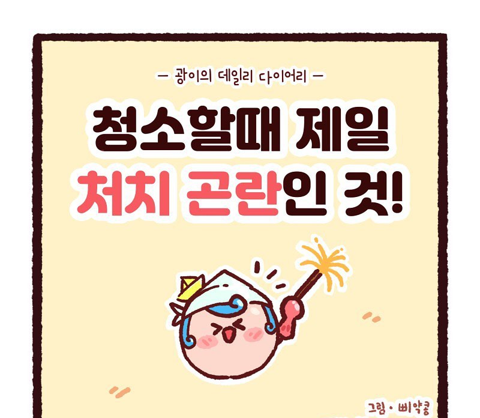
아이스팩 수거·재사용 안내를 캐릭터의 생활 장면으로 풀었습니다.
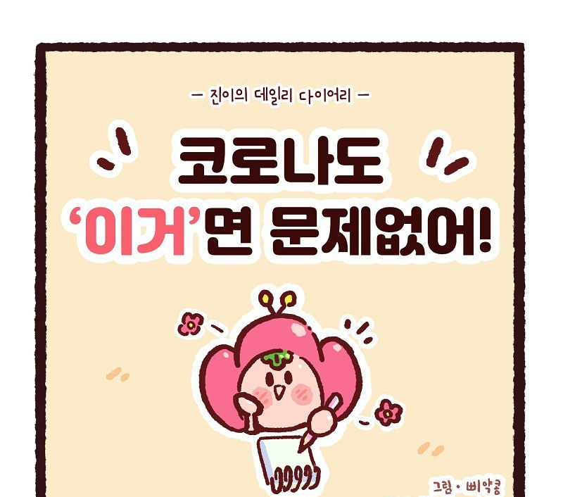
건강관리키트의 구성과 이용 정보를 만화로 정리했습니다.
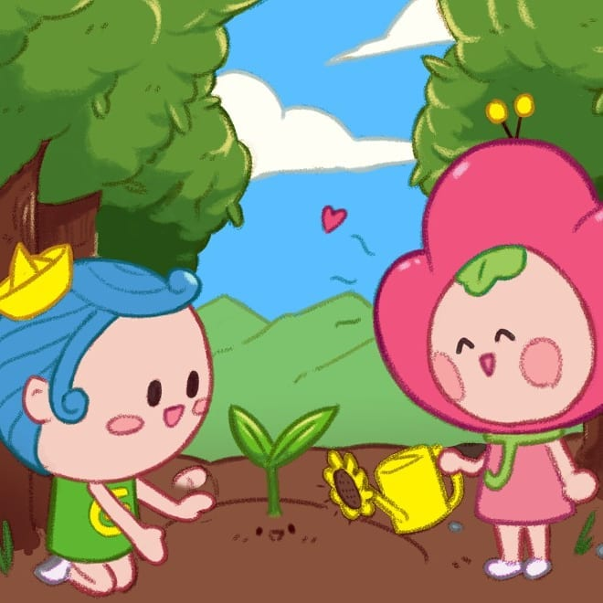
식목일을 주제로 공식 캐릭터를 활용한 기념 일러스트입니다.
캐릭터의 표정과 분위기를 그림에 담습니다.
인물과 소품을 함께 구성한 개인 일러스트, 캐릭터 팬아트, 합동 달력 참여작을 모았습니다. 완성한 그림은 작품집과 굿즈로도 이어졌습니다.
합동 달력 프로젝트에서 2월 일러스트를 맡았습니다. 발렌타인데이에 맞춰 홍마관 캐릭터들이 함께 초콜릿과 케이크를 만드는 장면을 그렸습니다.
동물의 둥근 귀와 발바닥, 털의 질감을 의상과 소품에 반영했습니다. 손을 들고 위협하는 표정과 동작을 함께 그렸습니다.
고양이를 안은 인물의 표정과 가까운 거리를 담았습니다. 부드러운 빛과 색의 번짐으로 장면의 분위기를 표현했습니다.
화면과 지면의 목적에 맞춰 정보를 디자인합니다.
앱의 정보 배치부터 브랜드 로고, 잡지와 앨범 패키지까지. 각 주제에 맞는 색과 형태, 읽는 순서를 고민한 개인 콘셉트 작업입니다.
앱 UI
자산 관리 앱을 사용하며 불편했던 디자인을 바탕으로, 20~30대 사용자를 위한 가상의 앱을 구성했습니다. 지출과 주요 기능을 쉽게 확인하는 것을 목표로 로고와 UI 화면을 함께 디자인했습니다.
메인 화면에 오늘의 소비 금액을 먼저 보여주고, 지출 그래프와 월별 내역을 아래로 이어 배치했습니다.
시작·로그인에는 민트와 청록 계열을, 지출 화면에는 주황 계열을 사용했습니다. 공통 로고와 둥근 형태를 반복해 화면 사이의 인상을 연결했습니다.
브랜드 CI
친근한 친환경 편의점을 상상하며 가상 브랜드 We,co를 만들었습니다. ‘우리’를 뜻하는 We와 환경을 뜻하는 Eco를 이름에 담고, 로고가 여러 매체에 적용된 모습을 목업으로 구성했습니다.
유연하고 둥근 글자 형태에 다색 심벌을 더해, 딱딱한 기업 이미지보다 친근한 인상을 표현했습니다.
종이 질감, 유리창, 간판에 컬러·단색 로고를 적용해 배경과 소재에 따른 표현을 나눴습니다.
표지 디자인
본인 사진을 모델로 그래픽 디자인 잡지의 표지를 구성했습니다. 흑백 인물에 선명한 색면을 겹치고, 사진과 타이포그래피가 하나의 화면을 이루도록 편집했습니다.
청록·노랑·분홍의 색면, 글리치 효과, 하프톤 패턴을 조합해 정적인 인물 사진에 시각적인 변화를 주었습니다.
큰 제목과 기사 문구의 크기·방향을 달리하고, 원화와 잡지 목업으로 평면과 입체에서의 구성을 보여주었습니다.
패키지 디자인
폴킴의 ‘휴가’에서 느낀 산뜻한 여름 분위기를 개인 앨범 패키지 콘셉트로 재해석했습니다. 푸른 바다 이미지와 필기체 제목을 중심으로 표지와 디스크를 디자인했습니다.
블루 톤에 원형 오브젝트와 작은 아이콘을 조합해 시원하고 경쾌한 인상을 담았습니다.
같은 사진과 색, 제목 서체를 반복하고 각 인쇄 영역의 형태에 맞춰 배치했습니다. 케이스 목업으로 패키지 전체의 모습을 구성했습니다.
편집 디자인
캐릭터 디자인을 주제로 가상의 인터뷰형 잡지를 기획했습니다. 기존 인터뷰와 사진·캐릭터 자료를 편집 소재로 활용하고, 표지부터 도입·인터뷰 지면까지 한 권의 흐름으로 구성했습니다.
큰 제목과 캐릭터 이미지로 주제를 먼저 전달하고, 질문과 답변을 단과 강조색으로 나눠 읽는 순서를 정리했습니다.
사진과 본문의 비중을 달리해 도입면과 인터뷰면을 구분했습니다. 펼친 지면과 목업을 함께 구성해 페이지 사이의 연결을 보여주었습니다.
최희수 · Portfolio